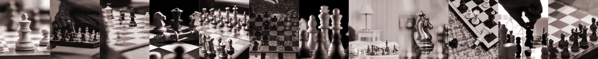

Hinweise, dass Schachspiel auf ältere Vorgängerspiele zurückzuführen: Indische, mit Würfeln gespielte Rennspiel Ashtapada, das mit dem Schach verwandte chinesische Xiangqi oder das etwa 3000 Jahre alten Urspiel Liubo. Schwierigkeit bei der Definition der Geburtsstunde des Schachs: frühe Vorläufer unterscheiden sich in Regeln, Taktik und Charakter von Schach.